製琴木材與材料
第 9 章・建議學習 1 小時
Tonewood and Materials: Mechanics, Moisture, Tradition and Regulation（製琴木材：力學、濕度、傳統與法規）
本章重點
- 木材有三個方向，每個方向的硬度與伸縮都不一樣。
- 木材會隨空氣濕度吸水或失水，薄板樂器因此會變形。
- 密度、剛性、阻尼要一起看，只比其中一項沒有意義。
- 樹種名稱不能決定聲音：同一樹種的兩塊板，也可能差很多。
- 「AAA 級」多半是廠商自己的分級；「玫瑰木」是商業名稱，不是單一樹種。
木材是製琴話題裡最容易被「神話化」的一項。
走進樂器行，你會看到一排短短的標籤：「雲杉亮」「玫瑰木溫暖」「楓木投射強」。
這些形容詞不是完全沒根據，它們來自長年的經驗。
但如果把它們當成自然定律，就會漏掉真正重要的資訊。
真正重要的資訊有兩類。第一類是木頭本身的條件：密度、彈性、阻尼、纖維方向、含水率。第二類是人的選擇：板材厚度、拱度，以及製琴師怎麼使用這塊木頭。
木材的性質會隨每一塊木頭改變，也會隨方向改變。
美國農業部（United States Department of Agriculture，USDA）的《木材手冊》（Wood Handbook）把木材看成「有明顯方向性的天然工程材料」。
同一個樹種，不同棵樹不一樣；同一塊板，不同方向也不一樣。〔S707〕
對樂器來說，這種變異是挑戰，也是製琴師能「調整板材」的空間。
本章把材料分成三層來看：
- 可量測的物理與機械性質。
- 歷史製琴傳統中常見的材料配置。
- 演奏者常用的音色語言。
順序如果反過來，就會從「我覺得這把很暖」，一路推論成「這個樹種天生就是暖」。
9.1 木材的方向性與吸濕性
木材的細胞和纖維大致沿著樹幹方向排列。
所以三個方向的剛性與尺寸變化都不一樣：
| 中文 | 英文 | 方向 |
|---|---|---|
| 縱向 | longitudinal | 順著樹幹、順著纖維 |
| 徑向 | radial | 由樹心往外的方向 |
| 弦向 | tangential | 沿著年輪、與徑向垂直 |
這三個方向表現不同，叫做異向性（anisotropy）。
對樂器的意義很直接。
面板希望在弦的方向保持足夠剛性，又要在橫向有適當彈性。
圓背的肋條（ribs）要能彎成曲率，同時長期保持尺寸穩定。〔S707〕
木材還有吸濕性（hygroscopicity）。
它會隨著周圍空氣的相對濕度與溫度，交換水分。
USDA 的資料指出一件事。在纖維飽和點（fiber saturation point）以下，含水率一改變，木材就會收縮或膨脹。而且不同方向的變化量不一樣。〔S708〕
對薄板做成的樂器，這點尺寸變化就足以出事。
它可能造成：面板變形、接縫開膠、琴格端（fret ends）凸出、弦距（action）改變。
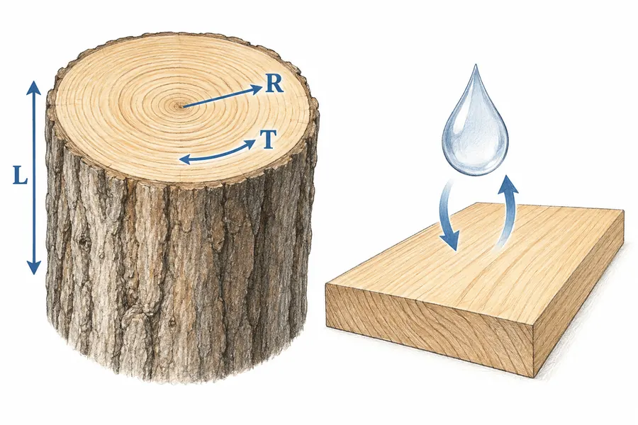
圖解 9.1 木材的方向性與吸濕性（示意）
常見誤解：「老木已經不會再動了。」
不對。只要它還是木材，就會回應環境濕度。
真正改善的是另一件事。經過充分乾燥、內應力釋放、長期尺寸循環之後，某些材料的狀態可能比較可預測。
但「比較可預測」不等於「對濕度免疫」。
| 重點與應用 | 內容 |
|---|---|
| 核心概念 | 木材的細胞和纖維大致沿樹幹方向排列，因此 longitudinal、radial、tangential 三個方向的剛性和尺寸變化不一樣。 |
| 關係與條件 | 木材也具有 hygroscopicity，會隨周圍空氣的相對濕度與溫度交換水分。 |
| 應用方向 | 判讀木材與材料資訊。 |
9.2 密度、剛性與阻尼
這三個名詞常被混在一起，其實各管一件事。
| 名詞 | 白話解釋 | 製琴時要注意什麼 |
|---|---|---|
| 密度（density） | 同樣大小的體積有多少質量 | 太重的板，同厚度下需要更多能量才推得動 |
| 彈性模數（modulus of elasticity） | 材料抵抗彈性變形的程度 | 製琴師最在意「順著纖維方向」的剛性 |
| 阻尼（damping） | 振動能量多快變成熱、被內部摩擦吃掉 | 低阻尼不是自動等於好 |
密度低，不代表一定優秀。
如果剛性也跟著很低，面板可能必須做得更厚，才能承受結構負荷。
所以真正重要的不是單一數字，而是密度和剛性怎麼組合。
彈性模數會影響板材在長跨度下的彎曲行為。
把這個觀念換算成一句白話：「同樣重量能提供多少剛性」，這就是比剛性（specific stiffness）。
這正是雲杉（spruce）長期成為面板主流材料的重要原因之一。
2022 年有一份曼陀林研究，直接量測挪威雲杉（Norway spruce）的機械性質，並把它放進有限元素模型（finite element model）裡。〔S705〕
阻尼管的是另一件事：振動能量多快被消耗掉。
低阻尼不等於自動比較好。
某個特定的共振如果拖得太長，反而可能造成不均衡。
製琴真正要的是：整體的頻率響應和時間響應符合音樂用途。
所以要依用途，平衡各項材料性質。
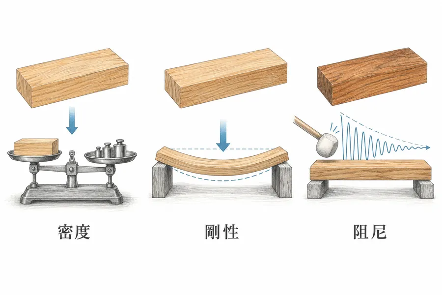
圖解 9.2 密度 剛性與阻尼（示意）
| 重點與應用 | 內容 |
|---|---|
| 核心概念 | 密度（density）告訴我們單位體積有多少質量。 |
| 關係與條件 | 彈性模數（modulus of elasticity）描述材料抵抗彈性變形的程度。 |
| 應用方向 | 判讀木材與材料資訊。 |
9.3 木材的三種切法
從原木鋸成板子的時候，年輪相對於板面的方向不同，就會形成不同的切法。
| 切法 | 中文 | 板面看到的年輪 |
|---|---|---|
| quarter-sawn | 徑切 | 通常較直的年輪線 |
| rift-sawn | 裂切 | 介於兩者之間 |
| flat-sawn | 弦切 | 山形紋較明顯 |
徑切板的 radial／tangential 方向配置，較有利於尺寸穩定。
這也是它常被面板與琴頸材料重視的原因。
徑切的板子常被面板與琴頸材料重視，原因就是尺寸穩定。
但「徑切＝高級，弦切＝低級」這種說法仍然太簡化。
有些楓木（maple）背板為了得到特定的花紋（figure），會刻意使用不同的切向。
圓背的肋條本身又很窄，製作需求和大面積的面板完全不同。
所以真正該問的是：這個部位需要什麼樣的尺寸穩定性、彎曲性和視覺效果？
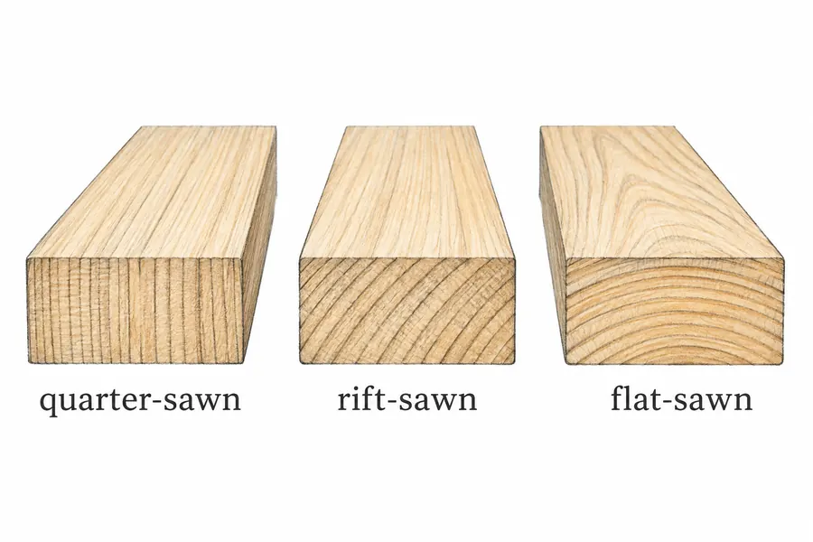
圖解 9.3 木材的三種切法（示意）
USDA 的資料顯示，木材在 tangential 方向的尺寸變化通常大於 radial 方向。
這就是切向為什麼會影響長期變形。
製琴師選板時，往往是在四個條件之間取得平衡：可用的木紋方向、重量、剛性、美觀。然後再依木料和設計選擇切法。〔S707〕〔S708〕
| 重點與應用 | 內容 |
|---|---|
| 核心概念 | 從原木鋸板時，年輪相對板面的方向不同，就會形成 quarter-sawn、rift-sawn、flat-sawn 等不同取向。 |
| 關係與條件 | 但「quarter-sawn = 高級，flat-sawn = 低級」仍然太簡化。 |
| 應用方向 | 判讀木材與材料資訊。 |
9.4 雲杉與面板
義大利傳統曼陀林的面板，大量使用歐洲雲杉／挪威雲杉（European / Norway spruce，學名 Picea abies）。另一種說法是廣義的細年輪雲杉（fine-grained spruce）。
2022 年的研究指出，歐洲製琴長期偏好雲杉，原因之一就是它「低密度 + 良好機械性質」的組合。
Calace 現行各級圓背曼陀林，也持續使用細年輪／特細年輪雲杉（fine-grained / extra fine spruce）。〔S705〕〔S711〕
不同雲杉之間，確實有平均物性和供應上的差異：
| 名稱 | 中文 | 說明 |
|---|---|---|
| Sitka spruce | 西特卡雲杉 | 北美常見樹種 |
| Engelmann spruce | 恩格曼雲杉 | 北美常見樹種 |
| Red / Adirondack spruce | 紅雲杉／阿迪朗達克雲杉 | 北美常見樹種 |
| European spruce | 歐洲雲杉 | 歐洲傳統常用 |
資料確實顯示它們之間有平均物性和供應差異。
但樹種名稱不能替代個體選材。
兩片同樣標成 European spruce 的板子，密度、年輪寬度、纖維偏斜、局部缺陷和剛性都可能不同。
所以製琴師通常會把重量、敲擊感、彎曲感與實際厚度合起來，一片一片評估。
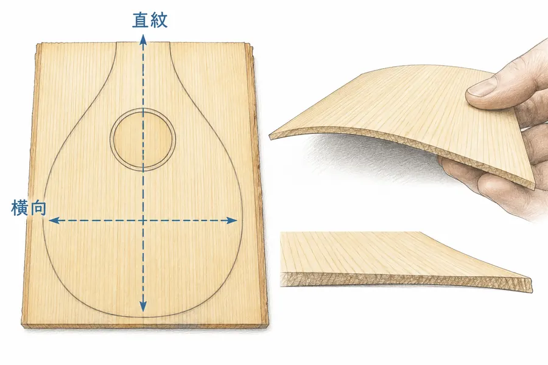
圖解 9.4 雲杉與面板（示意）
常見誤解：「年輪越細越好。」
這不是普遍規則。
非常均勻、筆直的木紋（grain）確實有利於可預測性和視覺傳統。
但年輪寬度只是眾多變數之一。
只拿「年輪緊密度（grain tightness）」去排聲音名次，會忽略晚材比例和整片板材的機械性質。
| 重點與應用 | 內容 |
|---|---|
| 核心概念 | 義大利傳統曼陀林面板大量使用 European / Norway spruce（Picea abies）或廣義 fine-grained spruce。 |
| 關係與條件 | Sitka、Engelmann、Red/Adirondack、European spruce 之間確實有平均物性和供應差異，但樹種名稱不能替代個體選材。 |
| 應用方向 | 判讀木材與材料資訊。 |
9.5 楓木與琴體
楓木（maple）在曼陀林家族裡的用途，比「單一背板木」廣得多。
Suzuki 2017 型錄中的 M-30 使用楓木 15 片式琴身（15-piece body）。
M-100 則是楓木 27 片式琴身，搭配楓木琴頸。
Calace 的音樂會（concert）型號也有 31 或 33 條肋條的楓木琴身。
這些例子說明：楓木可以被用在完全不同的結構上——窄肋條、琴頸，甚至雕刻背板。〔S714〕〔S711〕
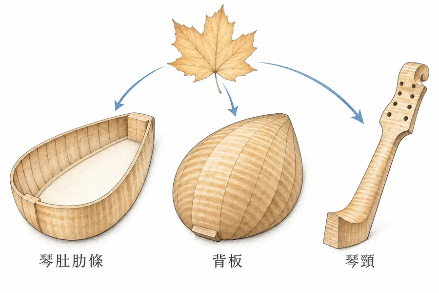
圖解 9.5 楓木與琴體（示意）
美式雕刻面板（carved-top）傳統後來常見「雲杉面板 + 楓木背側板」。
但 Orville Gibson 1898 年的實物，其實用的是雕刻的胡桃木（walnut）背板，以及整體的胡桃木側板與琴頸。
常見誤解：「雲杉＋楓木是曼陀林自古以來的標準組合。」
不對。那是後來形成的品牌常規。
把後來的常規倒推成「發明起點的唯一材料組合」，會讀錯歷史。〔S702〕
火焰紋（flame）、水波紋（quilt）、鳥眼紋（birdseye）這些 figure，是木纖維生長方向造成的視覺現象。
它們不等於聲學等級。
花紋很強烈的楓木，可能增加加工難度，纖維方向也更複雜。
市場常把漂亮的花紋和高階型號綁在一起。
但這更多反映的是選材、工時與美學價值，不應該直接換算成「一定更響」。
| 重點與應用 | 內容 |
|---|---|
| 核心概念 | Maple 在曼陀林家族裡的用途比單一「背板木」廣。 |
| 關係與條件 | 美式 carved-top 傳統後來常見 spruce top 配 maple back/sides，但 Orville Gibson 1898 實物其實使用 carved walnut back 和整體 walnut sides/neck。 |
| 應用方向 | 判讀木材與材料資訊。 |
9.6 玫瑰木的種類與用途
玫瑰木（rosewood）是一個商業名稱，涵蓋很多種木材。
不同 黃檀屬（Dalbergia） 的樹種，在密度、顏色、氣味與加工性上差異很大。
| 品牌／型號 | 玫瑰木的用法 |
|---|---|
| 傳統圓背曼陀林 | 常見玫瑰木肋條 |
| Calace（目前不少型號） | 標示特級玫瑰木琴身（extra rosewood body） |
| Suzuki MC-836（2017 型錄） | 記載為玫瑰木平背琴身（rosewood flat body） |
〔S711〕〔S714〕
因為「rosewood」常被行銷當成一個熟悉單字，二手市場很容易把任何深色木材都寫成 rosewood。
常見誤解：「照片上看起來深色，就是玫瑰木。」
如果沒有原廠型錄、製琴師紀錄或可靠的木材鑑定，只憑照片很難確認樹種（species）。
第 20 章的資料庫因此會把「產品頁標示 rosewood」和「學名已確認」分成兩種不同的可信度。
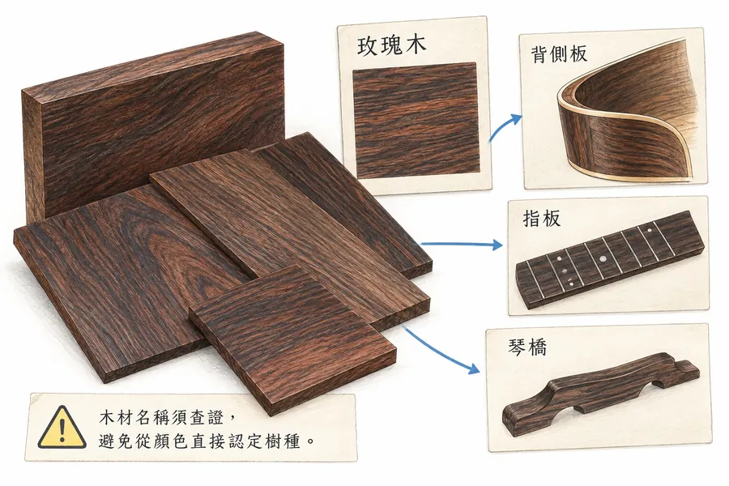
圖解 9.6 玫瑰木的種類與用途（示意）
玫瑰木研究還要確認三件事：物種、來源文件、跨境規定。
瀕危野生動植物國際貿易公約（Convention on International Trade in Endangered Species，CITES） 的締約國大會第 18 屆會議（CoP18），修訂了 附註 15（Annotation #15）。
這次修訂把製成品樂器（finished musical instruments）、製成品零件（finished parts）和配件（accessories）納入豁免範圍。
但巴西玫瑰木（Dalbergia nigra，Brazilian rosewood）屬於附錄一（Appendix I），不適用同一套邏輯。
各國的進出口規定，還可能額外要求文件。
對古董樂器與跨境交易來說，法規判讀有兩個依據：當下規定和實際物種。要確認該物種與該物件是否符合豁免條件。〔S709〕〔S710〕
| 重點與應用 | 內容 |
|---|---|
| 核心概念 | Rosewood 是涵蓋多種木材的商業名稱。 |
| 關係與條件 | 因為「rosewood」常被行銷當成一個熟悉單字，二手市場也容易把任何深色木材寫成 rosewood。 |
| 應用方向 | 判讀木材與材料資訊。 |
9.7 黑檀、桃花心木與其他材料
黑檀（ebony）密度高、耐磨，因此常見於指板（fingerboard）和琴橋（bridge）。
1898 年的 Gibson 實物就使用黑檀指板和琴橋。
現代 Calace 高階型號也常用加彭黑檀（Gabon ebony）指板。
這些部位選材的第一個理由，通常是耐磨、尺寸穩定與加工性能。然後才依所在部位，評估它的聲學作用。〔S702〕〔S711〕
桃花心木（mahogany）常見於琴頸。
Suzuki M-30、MD-4 和 MC-836 的 2017 年規格，都列桃花心木琴頸。
琴頸需要足夠剛性、相對低的重量和良好加工性。
這些工程條件，比「桃花心木比楓木暖」這種說法更直接。〔S714〕
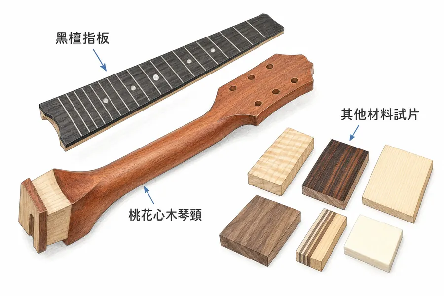
圖解 9.7 黑檀 桃花心木與其他材料（示意）
胡桃木（walnut）在 Orville Gibson 1898 的實物裡扮演極重要的角色：背板、側板、琴頸與頭部結構都大量使用胡桃木。
櫻桃木（cherry）、梨木（pear）及其他果樹木材（fruitwood），在歐洲歷史製琴中也可見到。
這些材料提醒我們一件事：
曼陀林的重點從來不是某一個樹種，而是一個材料系統。這個系統受三件事影響：地區供應、工藝傳統與設計目的。〔S702〕
| 重點與應用 | 內容 |
|---|---|
| 核心概念 | Ebony 高密度、耐磨，因此常見於 fingerboard 和 bridge。 |
| 關係與條件 | Mahogany 常見於琴頸。 |
| 應用方向 | 判讀木材與材料資訊。 |
9.8 乾燥與含水率
剛砍下來的木材含水率高，不適合直接做精密樂器。
乾燥的目的有三個：
- 讓重量變輕。
- 讓木材接近未來使用環境的平衡含水狀態。
- 降低後續尺寸變化與內應力風險。
自然乾燥（air drying）、窯乾（kiln drying）和長期熟成（seasoning）可以是不同流程。
但最後都要面對同一件事：木材會隨環境再吸濕或失水。〔S723〕
USDA 指出，木材在纖維飽和點以下，會隨含水率變化而收縮或膨脹，而且 tangential 與 radial 方向的變化不同。
樂器面板很薄，膠合又把不同方向的零件黏在一起。
所以濕度變化不只是讓整把琴「變大變小」，還會產生內部應力。〔S708〕
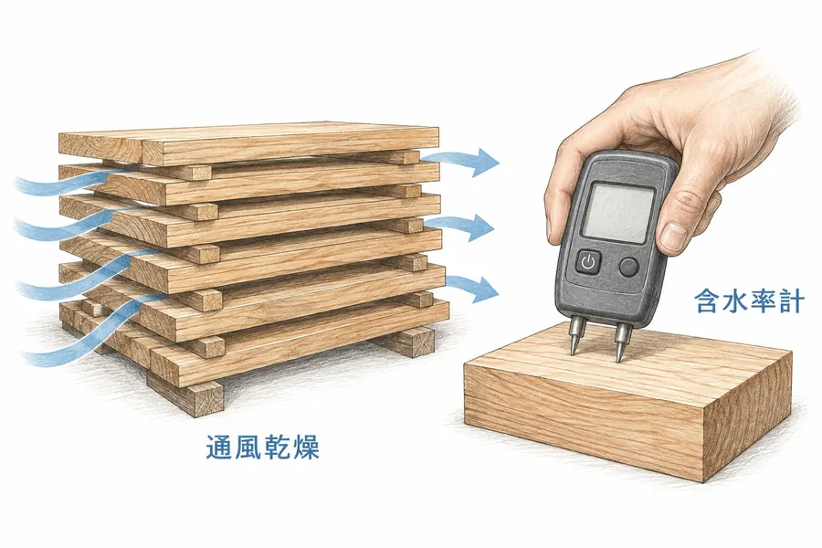
圖解 9.8 乾燥與含水率（示意）
這也解釋了為什麼會出現以下現象：
| 環境 | 常見狀況 |
|---|---|
| 乾燥地區 | 面板裂縫（top crack）、接縫開膠（open seam）、琴格端凸出（fret sprout） |
| 濕度高 | action 上升、面板隆起、琴頸狀態改變 |
保養重點在於：避免長時間超出合理環境，也避免劇烈變化。
第 21 章會把這些風險轉成日常操作。
| 重點與應用 | 內容 |
|---|---|
| 核心概念 | 剛砍伐的木材含水率高，不適合直接做精密樂器。 |
| 關係與條件 | USDA 指出，木材在 fiber saturation point 以下會隨含水率變化而收縮或膨潤，而且 tangential 與 radial 方向變化不同。 |
| 應用方向 | 判讀木材與材料資訊。 |
9.9 材料與音色的判讀
木材會影響聲音，這是可以量測的。
因為密度、剛性和阻尼會影響板的模態（mode）。
但「某樹種必然產生某音色」就說得太滿了。
2022 年的研究直接把面板木材性質（soundboard wood properties）和有限元素結果連起來，證明材料參數很重要。
但它同時也顯示：整體設計和板材幾何不能被排除在外。〔S705〕
更精確的說法應該是這樣：
在相同或相近的幾何下，材料機械性質的差異會改變結構振動。
但實際樂器裡，幾何、厚度、力木（bracing）、琴橋和製作公差也一起在改變。
這句話比較長，卻比「雲杉＝明亮」可靠得多。
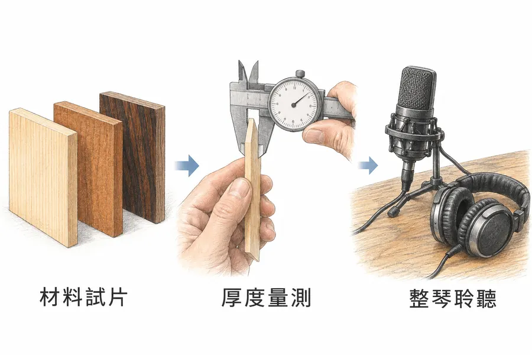
圖解 9.9 材料與音色的判讀（示意）
製琴師的經驗詞彙仍然有價值。
當一位製琴師長期使用某種木料，他對加工、厚度與成品反應的經驗可以非常準確。
只是這種經驗應該標示為工藝知識，並且清楚交代材料與設計的適用條件。
| 重點與應用 | 內容 |
|---|---|
| 核心概念 | 木材會影響聲音，因為密度、剛性和阻尼會影響板的模態，這是可以量測的。 |
| 關係與條件 | 更精確的說法應該是：「在相同或相近幾何下，材料機械性質的差異會改變結構振動。」 |
| 應用方向 | 判讀木材與材料資訊。 |
9.10 案例：三種品牌的材料配置
Suzuki 2017 型錄提供了一組很適合教學的量產資料：
| 型號 | 面板 | 琴身 | 琴頸 | 指板／琴橋 |
|---|---|---|---|---|
| M-30 | 雲杉 | 楓木 15 片式 | 桃花心木 | 玫瑰木／黑檀 |
| M-100 | — | 楓木 27 片式 | 楓木 | 黑檀 |
若只用「木種音色」思考，很容易直接說：「M-100 因為是楓木琴頸，所以聲音如何如何。」
但真正同時變動的還有肋條結構、製作等級與其他細節。
所以不能單獨歸因。〔S714〕
圖解 9.10 三組案例的來源記錄；木材規格見本節正文（示意）
Calace 現行系列的變化更複雜：玫瑰木 25 條肋條、楓木 31／33 條肋條、24 與 29 格、不同琴頭與裝飾等多維變化。
材料配置和產品系列綁在一起。
所以使用者比較的應該是：材料與結構共同構成的整體設計。〔S711〕
Orville Gibson 1898 的實物，更直接打破後世的刻板印象：雕刻雲杉面板配胡桃木背板、側板與琴頸。
後來常見的配置則是雲杉配楓木。
這把琴在歷史上仍具有重大設計影響，證明經典結構不需要依賴我們今天熟悉的材料口號。〔S702〕
| 重點與應用 | 內容 |
|---|---|
| 核心概念 | Suzuki 2017 型錄提供一組很適合教學的量產資料：M-30 是 spruce top、maple 15-piece body、mahogany neck、rosewood/ebony fingerboard & bridge。 |
| 關係與條件 | 若只用「木種音色」思考，很容易直接說 M-100 因 maple neck 所以聲音如何。 |
| 應用方向 | 判讀木材與材料資訊。 |
9.11 案例：木材商業等級的解讀
「AAA」「master grade」「select」這些木材等級，通常重點在品牌或供應商自己的分級。
它們可能包含年輪、顏色、缺陷、花紋和供應稀有度。
但不同品牌的 AAA 不能直接橫向比較。
常見誤解：「AAA 是全球統一的木材標準。」
不是。若產品頁沒有說明分級規則，讀者應該把它當成商業描述，不要當成機械性能證明。
火焰楓木（flamed maple）主要描述的是花紋。
漂亮的火焰紋確實有美學與市場價值。
但你不能從照片判斷那塊板的彈性模數或阻尼。
對演奏者而言，比「木頭等級」更直接的評估，仍然是整把琴：
- 反應是否均衡？
- 音準與設定（Setup）是否穩定？
- 動態是否符合用途？
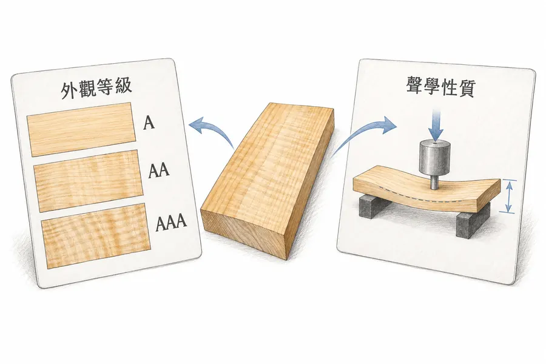
圖解 9.11 案例 木材商業等級的解讀（示意）
真正需要材料證據的場合，通常是這幾種：
- 古琴鑑定
- CITES 跨境
- 修復匹配
- 研究
這時候應該依文件、顯微特徵、專業鑑定，或至少多來源的歷史規格。這些都能提高物種辨認的可靠程度。
表 9-1｜常見材料：先看功能，再談音色
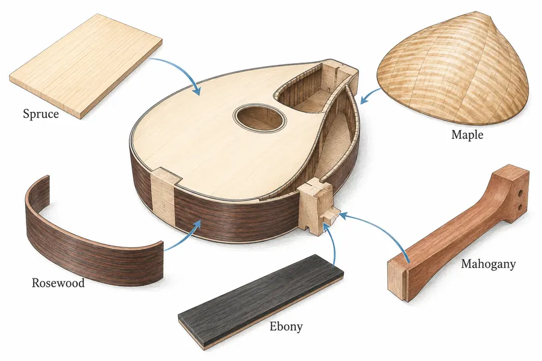
| 材料 | 常見部位 | 首先要看的功能 | 避免的過度簡化 |
|---|---|---|---|
| Spruce（雲杉） | soundboard（面板） | 低質量／剛性組合 | 「一定亮」 |
| Maple（楓木） | ribs（肋條）、back（背板）、neck（琴頸） | 剛性、加工、外觀 | figure＝聲音等級 |
| Rosewood（玫瑰木） | bowl ribs（圓背肋條）、fingerboard（指板） | 密度、耐磨、裝飾 | 所有深色木都是 rosewood |
| Ebony（黑檀） | fingerboard（指板）、bridge（琴橋） | 耐磨、尺寸穩定 | 黑色就一定是 ebony |
| Mahogany（桃花心木） | neck（琴頸）、body parts（琴身零件） | 重量與加工平衡 | 「一定溫暖」 |
圖解 表 9-1｜常見材料：先看功能，再談音色（示意）
| 【科學證據】 木材的密度、彈性和含水率確實會影響結構；但樹種名稱本身不能唯一預測成品音色。 |
|---|
| 【法規提醒】 finished musical instruments 在 CITES Annotation #15 下有特定豁免，但 Brazilian rosewood（Dalbergia nigra）屬 Appendix I；跨境前應依當時法規、物種和文件確認。 |
|---|
自我學習題庫

學習檢查：作答、核對、複習
先自己作答，再看答案。答錯時回到本章相關小節重新讀一次。
1. 木材密度高就一定聲音比較好嗎？
-
A. 一定
-
B. 不一定，還要看設計與厚度等因素
-
C. 只對舊琴成立
-
D. 只對新琴成立
2. Quarter-sawn 指的是？
-
A. 木材切法
-
B. 調弦法
-
C. 撥片法
-
D. 和弦轉位
3. AAA 木材等級通常應怎麼看？
-
A. 全球統一標準
-
B. 多半是品牌或供應商自己的分級
-
C. 代表一定是某樹種
-
D. 代表一定手工製作
答案：1.B 2.A 3.B
本章主要查證來源

查證來源：找原文、核條件、留紀錄
【S705】Quintavalla et al.：The Acoustics of Traditional Italian Mandolins and Their Relation with Soundboard Wood Properties（International Journal of Wood Culture 2, 2022）。 義大利歷史與現代曼陀林的 bridge admittance、聲輻射、模態與 soundboard wood 研究。
https://www.sciencedirect.com/org/science/article/pii/S2772318622000017
【S707】USDA Forest Products Laboratory：Wood Handbook—Wood as an Engineering Material（FPL-GTR-282, revised 2021）。 木材結構、物理性質、機械性質、乾燥、膠合與材料工程基礎。
https://research.fs.usda.gov/fpl/wood-handbook
【S708】Glass & Zelinka, USDA Forest Products Laboratory：Moisture relations and physical properties of wood（Wood Handbook Chapter 4, 2021）。 木材吸濕、平衡含水率、收縮膨潤與尺寸穩定的官方技術資料。
https://research.fs.usda.gov/treesearch/62243
【S709】CITES：CoP18 Proposal 52 / Annotation #15 amendment（2019）。 Dalbergia spp. Annotation #15 中 finished musical instruments 等豁免條文；Brazilian rosewood 另屬 Appendix I。
https://cites.org/sites/default/files/eng/cop/18/doc/E-CoP18-105-01-A2.pdf
【S710】CITES Secretariat：Study / notification on Annotation #15 and musical instruments（2025）。 對 finished musical instruments、parts、accessories 豁免與 Dalbergia 貿易的後續研究背景。
https://cites.org/sites/default/files/notifications/E-Notif-2025-030.pdf
【S711】Liuteria Calace：Mandolini – official specifications（accessed 2026-10-06）。 33.5 cm 弦長、24/29 格、25/31/33 ribs、spruce top、rosewood/maple body 等現行規格。
https://www.calace.it/en/mandolini
【S714】Suzuki Music / Suzuki Violin：2017 String Instrument Catalog（2017）。 M-30、M-100、MD-4、MD-10、MC-836 的弦長、木材與規格。
https://www.suzuki-music.co.jp/app/uploads/2017catalog14.pdf
【S723】USDA Forest Products Laboratory：Drying and control of moisture content and dimensional changes（technical report / Wood Handbook）。 乾燥、平衡含水率與尺寸變化控制。
https://research.fs.usda.gov/treesearch/37419